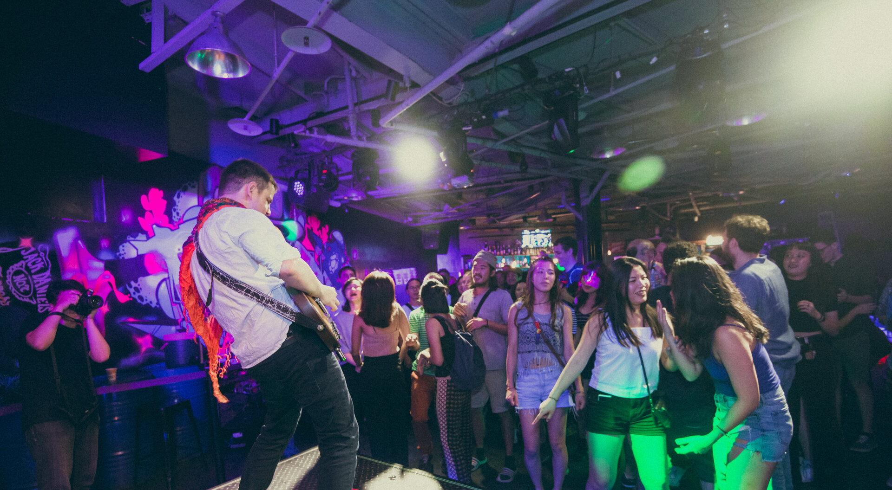
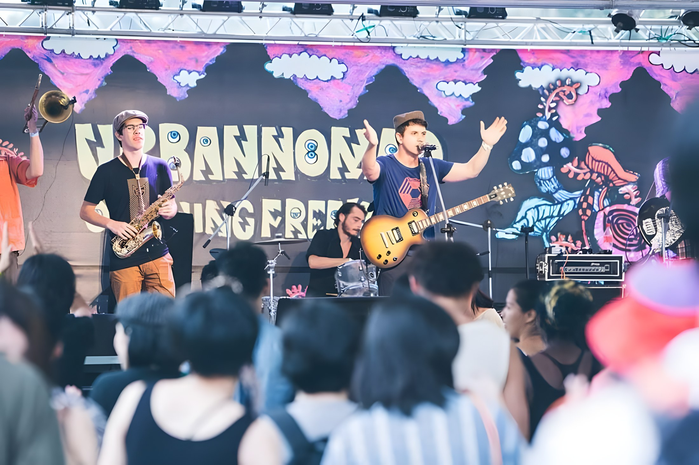
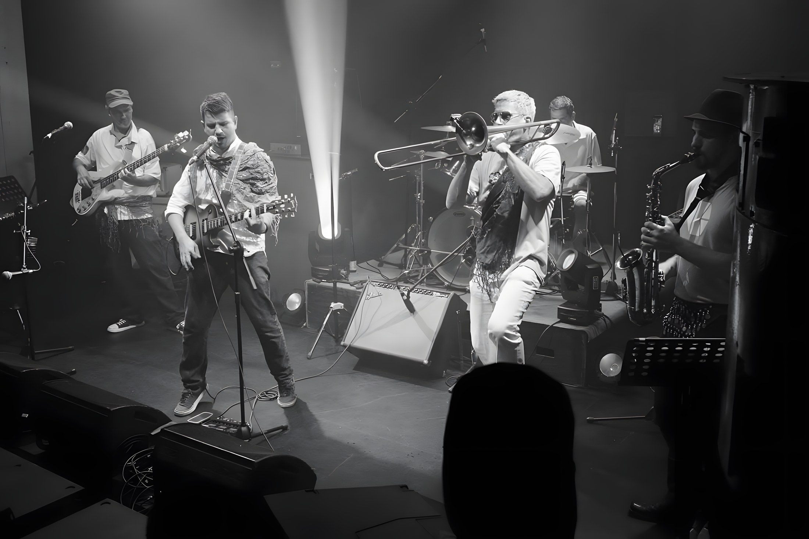
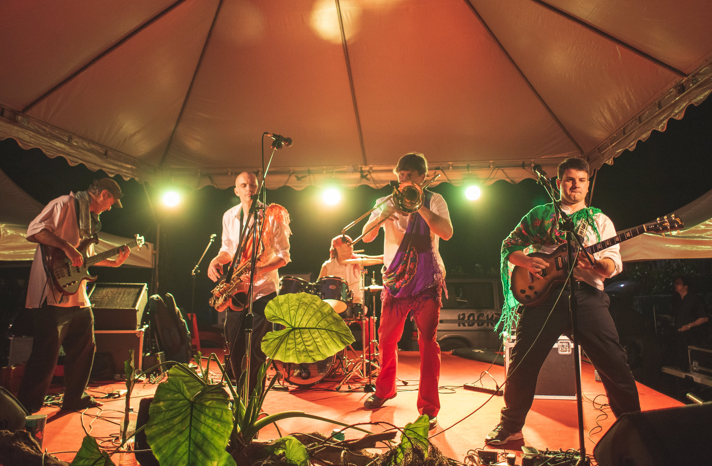
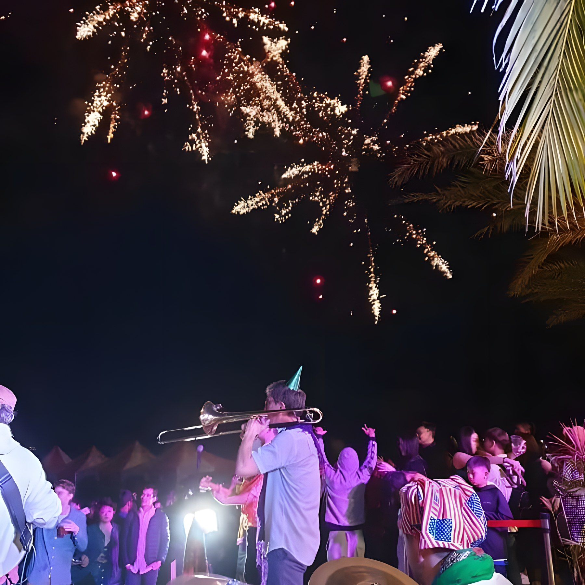
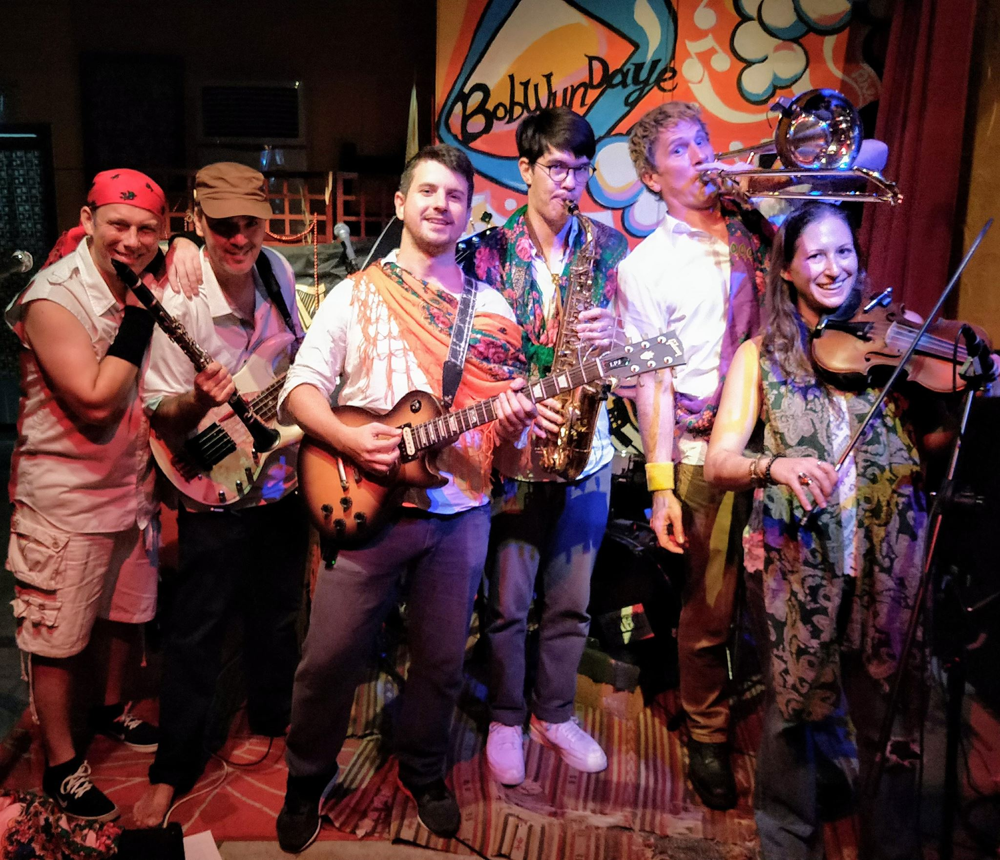

European Christmas Market
Xinyi Xiangti Avenue Plaza, Taipei
8:00–9:30 pm · Free entry

Balkan folk, live from Taipei.
Xinyi Xiangti Avenue Plaza, Taipei
8:00–9:30 pm · Free entry
Live at Red Room
We recorded this at Red Room Rendezvous in Taipei in 2021.
Listen on SoundCloud ↗︎About the music
Most of what we play comes from Balkan folk traditions, including Niška Banja. We write some tunes of our own, and our set also includes songs from Egypt, Italy, Spain and France, as well as songs in Mandarin. We arrange them for the five of us. Live, we leave room to stretch a solo or stay with a groove when the crowd is dancing.

Live video
Our Taiwan Ska Fest set and a few clips from Taipei shows.
Bookings
Festivals, music venues, cultural programs, weddings and company events. Tell us about your venue and date.
A full-band set for festival stages, live houses and music clubs.
Bars, restaurants and spaces with a smaller stage. We'll work out what fits.
Weddings, receptions, company events, 尾牙 and 春酒. We can discuss set length, sound and invoicing.
Music and rhythm workshops for schools, festivals and cultural events.


About Balkazar
Balkazar started in Taipei, playing songs from Serbia and the wider Balkans. Over time we've made our own arrangements, added original songs and found our own sound along the way.
We've played Urban Nomad, Tiger Mountain Ramble, Taiwan Ska Fest, the Shilin Residence Chrysanthemum Show, Daniel Pearl World Music Day, Taipei Veggie Fest and Celebration Canada, among other events in Taiwan. The Taipei Times once called Balkazar a “Balkan reggae-ska outfit.”
Selected live stages
We've played music festivals and cultural events around Taiwan. Here are some of those shows, with photos, videos and links to the original listings.
Three festival editions in Taipei. 2019 organizer lineup ↗︎
Our Taiwan Ska Fest show at PIPE Live House, with Skaraoke also on the lineup. Official PIPE lineup ↗︎
Main-stage show at Taipei Hakka Cultural Park. Blow music press ↗︎
An outdoor music festival in Taipei's Tiger Mountain. Festival press ↗︎
A featured Balkan music concert at a city cultural event. City Government notice ↗︎
Two editions, with news coverage and photographs from the festival. Taiwan News + band photo ↗︎
Recurring live performances at Taipei's Canada Day celebrations. Taipei Times 2026 ↗︎
Returning to Taipei's Christmas Market on December 3, 2026. Upcoming show details ↗︎
Festival history → · Bars, clubs & New Year’s Eve shows → · Playing with Fermín Muguruza & Skaraoke →
Next festival date: European Winter Festival / European Christmas Market — December 3, 2026, 8–9:30 pm ↗︎
Photos
Gigs around Taiwan.



Bookings
Email us or message us on LINE or Instagram with the date, venue and what you’re planning.